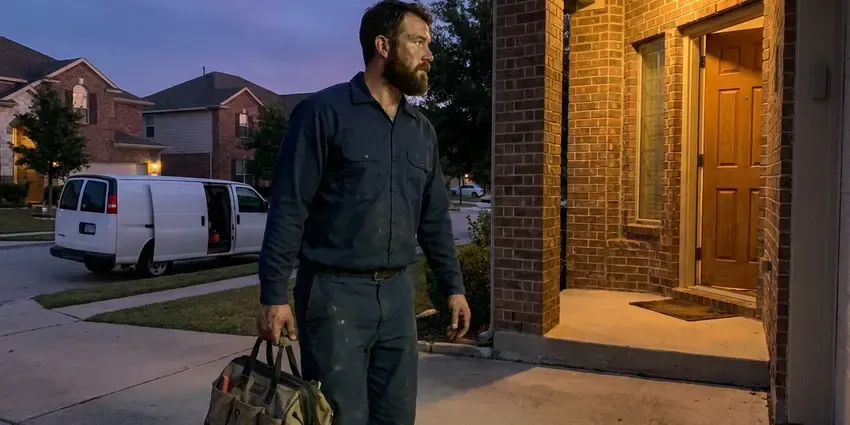

Clogged Sewer Line in St. Johnsbury, VT
A clogged sewer line in St. Johnsbury, VT is a health hazard. Our team arrives equipped to clear it, sanitize and stop a repeat.
- Accurate diagnostics
- Licensed Plumbers
- Licensed, Insured Plumbers
- Video Sewer Line Camera Checks

Get Professional Clogged Sewer Line Service in St. Johnsbury, VT.
Our licensed plumbers are ready to tackle any sewer line blockage, big or small.
Professional Clogged Sewer Line Repair in St. Johnsbury, VT
CKV Plumbing clears clogged main sewer lines that carry all of your home's waste to the city sewer or septic system. We access the line through the cleanout, cut through roots and debris with a heavy sewer machine and verify the results with a video camera.
Our expertise includes:
- High-pressure hydro jetting for grease and scale in main lines
- Sewer camera inspections for accurate diagnosis
- Pipe descaling and debris clearance

Additional Plumbing Maintenance Services in St. Johnsbury, VT
Our maintenance and specialty plumbing services in St. Johnsbury, VT protect your home year-round and extend the life of every system.


Customers
Why Choose CKV Plumbing for Clogged Sewer Line in St. Johnsbury, VT?
A main sewer clog affects every drain in the house and can push raw sewage onto your floors. We respond quickly and clear the full line so the problem does not return next week.
- Local Knowledge, Understanding Vermont soil conditions and common plumbing issues, like tree root intrusion, helps us provide more targeted solutions.
- Transparent Pricing, You will always receive a clear, upfront estimate before any work begins, with no hidden fees.
- Honest Advice, If cleaning is enough, we tell you so instead of pushing a replacement.
Citywide Coverage
We know sewer issues can strike anywhere, which is why our local technicians are strategically placed to offer fast service across the entire St. Johnsbury area. Count on us for reliable solutions, wherever you are located.
Experienced Team
The CKV Plumbing team is made up of certified professionals, each skilled in identifying and resolving complex sewer line problems, from tree root invasions to collapsed pipes. You can trust their skill for your St. Johnsbury property.
Safety-First Approach
We make sure all clogged sewer line work is performed to high safety standards and complies with all St. Johnsbury, VT building and plumbing codes. This commitment means a secure and effective resolution to your sewer issues.
Trusted Certified St. Johnsbury Plumbing Services Professionals
At CKV Plumbing, we take pride in providing licensed, certified plumbing services throughout St. Johnsbury, VT. Backed by leading industry credentials, our experienced plumbers combine technical skill with genuine customer care. Whether it is repair, installation, or maintenance, we follow strict safety and quality standards to deliver long-lasting results you can trust.
Call Us Now PHCC Plumbing Contractor Recognition
PHCC Plumbing Contractor Recognition Better Business Bureau (BBB) Accreditation
Better Business Bureau (BBB) Accreditation Angi Certified Pro
Angi Certified Pro ISO 9001 Quality Management Certification
ISO 9001 Quality Management CertificationProfessional Clogged Sewer Line Services in St. Johnsbury, VT
Hydro-Jetting for Stubborn Clogs in St. Johnsbury
CKV Plumbing uses powerful hydro-jetting technology to clear even the most stubborn sewer line blockages. This method uses high-pressure water streams to blast away grease, scale, mineral buildup, and tree roots, restoring your pipes to their original diameter. It's a highly effective, non-invasive way to clean your sewer lines thoroughly and prevent future clogs. Unlike snaking, hydro-jetting cleans the whole pipe wall.

Identifying and Repairing Damaged Pipes in St. Johnsbury
Sometimes, a recurring clog indicates a more significant issue, like a damaged, cracked, or collapsed sewer pipe. Our camera inspections can identify these structural problems. While our primary service is clearing clogs, if we find pipe damage, CKV Plumbing can provide expert recommendations for repair or replacement options, from trenchless methods to traditional excavation, for a long-term solution in St. Johnsbury.
Tree Root Sewer Clogs in St. Johnsbury
Roots from thirsty trees and shrubs seek out moisture and push into sewer pipe joints. Clay and older cast iron pipe are especially prone to root intrusion because of their many joints. We cut roots with a sewer machine fitted with root saws and then camera the line to see how much damage remains. For ongoing root problems, we can recommend a root treatment schedule or lining.
Hydro-Jetting Services in St. Johnsbury, VT
Hydro-jetting is a powerful method for clearing severe sewer line clogs, especially those caused by grease, scale, or heavy sludge buildup. This process uses highly pressurized water jets to scour the inside of your pipes, not only clearing the blockage but also cleaning the pipe walls. It is an effective preventative maintenance tool and is especially effective for older pipes in St. Johnsbury that may have collected years of debris. This technique is safe for most pipe types.
Sewer Cleanout Installation in St. Johnsbury
Some older homes have no accessible cleanout, which forces plumbers to pull a toilet or go through a roof vent to clear the main line. We install a two-way cleanout near the foundation so future clearing is faster and cheaper. The cleanout also gives the city or a future plumber easy access for inspections. This is a common upgrade after a serious sewer clog.
Commercial Clogged Sewer Line Service in St. Johnsbury
Commercial properties in St. Johnsbury often face unique challenges with their sewer systems due to higher usage and different types of waste. CKV Plumbing offers specialized commercial clogged sewer line services, understanding the need for limited disruption to your business operations. We promptly diagnose and resolve blockages in restaurants, offices, and other commercial buildings, using appropriate industrial-grade equipment.
Emergency Clogged Sewer Line Repair in St. Johnsbury, VT
A sudden sewer backup is an emergency that requires immediate attention. CKV Plumbing provides rapid response for emergency clogged sewer line repairs across St. Johnsbury, VT. We understand the potential for water damage and health risks, so our emergency teams are equipped to diagnose and clear the blockage quickly, minimizing damage and restoring your plumbing. Be sure to call us at (802) 209-5139 if you experience a sewer line emergency.

Sewer Belly and Sagging Pipe Clogs in St. Johnsbury, VT
Clay soils in river valleys drain poorly and can hold water against foundations, so sump pumps are common in low-lying homes. Soil that swells, shrinks or settles can cause sections of sewer pipe to sink and form a belly. Waste and water collect in the low spot and lead to repeat clogs. Our camera and locator show where the belly is and how deep it sits. We can then quote a spot repair to restore correct slope.
Clogged Sewer Line Near Me in St. Johnsbury, VT
Our team is always ready to dispatch to your location in St. Johnsbury, so professional help for your clogged sewer line is never far away. We pride ourselves on being the go-to plumbing service for residents and businesses seeking prompt and professional assistance.
Local crews understand which neighborhoods have older clay laterals, which have heavy tree cover and how city sewer taps are configured. That knowledge speeds up diagnosis. It also helps us coordinate with the city when the clog is on the public side.
CKV Plumbing at a Glance
- Licensed and insured plumbers serving St. Johnsbury, VT
- 24/7 emergency service with same-day scheduling
- Clear written estimates, no hidden fees
- 4.8-star rated by 553+ Vermont customers
St. Johnsbury Map
St. Johnsbury Information
- Population
- 5,994
- Area codes
- Local
- Service area
- St. Johnsbury and communities within 40 miles
- Nearby
- Barre, Montpelier, Essex Junction, South Burlington
Clay soils in river valleys drain poorly and can hold water against foundations, so sump pumps are common in low-lying homes. Thirsty tree roots also put constant pressure on sewer pipes in St. Johnsbury, VT, so quick clog clearing and camera checks prevent messy and costly backups.
Expert Services
Trust our professionals for reliable CKV Plumbing solutions in St. Johnsbury, VT.
Our Specialized Plumbing Services in St. Johnsbury, VT
At CKV Plumbing, we provide a complete range of plumbing services across St. Johnsbury, VT. From leak detection to full system installations, our team ensures fast, precise, and affordable service for both residential and commercial properties. Explore our core services below:


How Our Clogged Sewer Line Service Works in St. Johnsbury, VT
CKV Plumbing follows a clear process to deliver effective and lasting solutions for your sewer line problems.
Request a Quote
Call (802) 209-5139 and describe which drains are backing up and whether sewage has reached the floor. We dispatch a sewer technician with clear prices.
Clear the Main
We locate or open the cleanout and clear the line with a sewer machine or jetter. Then we run water to confirm full flow.
Camera and Advise
We inspect the line with a camera and show you the footage. You get honest repair options only if the pipe actually needs it.
Frequently Asked Questions About Clogged Sewer Line in St. Johnsbury
Clearing a main sewer line through an accessible cleanout usually costs $200 to $550. Hydro jetting runs about $400 to $1,000 depending on length and buildup. Adding a camera inspection is typically $150 to $350 more.
Rental drum augers can be dangerous and may get stuck or damage old pipe. Main sewer clogs also involve sewage exposure. It is safer and often more effective to call a professional.
CKV Plumbing stands behind our work. We offer a warranty on our sewer line clearing services, usually ranging from 30 to 90 days, depending on the specific service and the condition of the pipes. We will provide full details on your warranty at the time of service.
In St. Johnsbury, VT, common causes include tree root intrusion, buildup of grease and foreign objects (wipes, feminine hygiene products), shifting soil causing pipe misalignment, and aging pipes that corrode or collapse. Clay soils in river valleys drain poorly and can hold water against foundations, so sump pumps are common in low-lying homes.
Multiple drains backing up at once, gurgling toilets when the washer drains and sewage odors in the house are classic signs. Water rising in the shower when you flush a toilet is another strong clue. Wet spots or sewage smell near the cleanout outdoors can also signal a clog.
CKV Plumbing stands behind our work. We offer a warranty on our clogged sewer line clearing services, usually ranging from 30 to 90 days, depending on the nature of the clog and the condition of your pipes. We will discuss warranty details with you before starting the job.
If our camera inspection reveals that your clog is due to a broken, collapsed, or severely damaged sewer line, clearing the clog will only be a temporary fix. In such cases, CKV Plumbing will provide you with a clear assessment and options for sewer line repair or replacement, including trenchless solutions where possible, to address the root cause of the issue.
Hydro-jetting is a powerful method where high-pressure water is blasted through your sewer lines to scour the pipe walls clean. It effectively removes grease, mineral buildup, scale, and even tree roots, leaving your pipes in a near-new condition. It's much more effective than traditional snaking for deep cleaning and preventing recurring clogs.
What People Are Saying About Our Plumbing Experts?

Emily R.
I called CKV Plumbing for plumbing repair, and the technician was fast, polite, and thorough. They explained the problem clearly and fixed it the same day. I will definitely hire them again. Highly recommended!
Plumbing Repair · Essex Junction, VT
James P.
Our commercial plumbing system had a leak under the sink, and CKV Plumbing handled it professionally. The plumbers arrived quickly and restored everything without disruption to our customers.
Commercial Plumbing · Montpelier, VT
Laura S.
I scheduled a water heater replacement, and the team made the process smooth and affordable. The new unit works perfectly, and they cleaned up after completing the job.
Water Heater Replacement · South Burlington, VT
Mark T.
When our office needed drain cleaning, CKV Plumbing provided quick, reliable service. The plumber arrived on time and made sure every drain flowed perfectly before leaving. Very satisfied.
Drain Cleaning · St. Johnsbury, VTRobert G.
The trenchless sewer replacement saved our front yard. They walked us through the camera inspection footage first so we knew exactly what we were paying for.
Sewer Line Replacement · South Burlington, VT
Patricia H.
We had a slab leak that two other companies could not find. CKV Plumbing located it in under an hour, explained our options, and the price matched the quote to the dollar.
Slab Leak Repair · South Burlington, VT